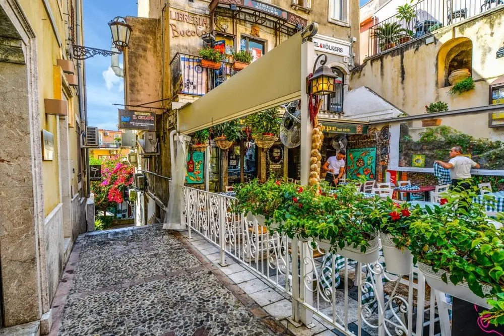
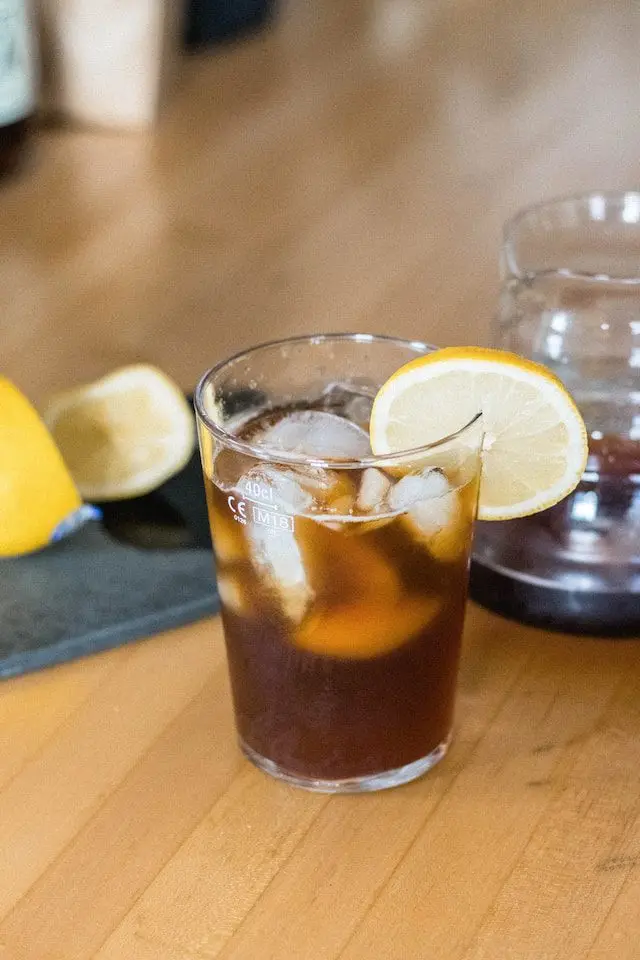
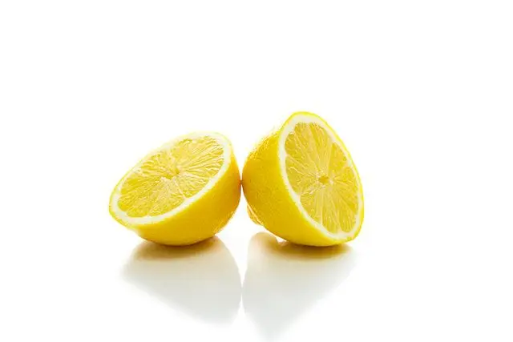

Articles / Recipes
Enjoy a tropical cuppa – Sicily Coffee!
2023-10-01 · Recipes, Recipes

Original public content from Yen Chuan. Product claims and specifications remain subject to confirmation by the company.
Although it’s technically autumn right now, the weather is just as sweltering as usual. Want a caffeine boost for the summer weather? Why not try some sicily coffee?
Read on to learn more!

What is Sicily Coffee?
Despite the name, Sicily Coffee actually has nothing to do with its namesake! If you visit the Italian town and try to order Sicily coffee, you’d probably get some odd looks instead.
So where did this name come from?
The Italians are well-known for their coffee obsession – To them, a cup of expresso a day has become a daily habit. Sicily is also famous for its lemons, so people put two and two together and started calling the lemon-coffee combination “Sicily Coffee”.
The exact origins of this drink is also disputed: Some claim that the drink was invented in Giugliano, Italy; others argue that the drink was created in France or the US – nothing to do with Italy!
Other names for this drink include Expresso Romano, caff canarino or caffé al limone.
How do you make it?
While the origins of the drink is murky at best, the drink itself is pretty simple: A strong shot of expresso and some sugar, with a slice of lemon stuck on the glass rim.
As the lemon juice drips down the glass into the coffee, it gives the bitter coffee an extra zesty kick! Meanwhile, both the coffee and sugar work to tone down the sourness of the lemon, creating a layered flavour that’s sure to tingle your tastebuds!
Alternatively, some choose to simply squeeze the lemon juice directly into the coffee, with some lemon zest or slices for garnish. Perfect to enjoy both hot or iced!
Want to give it a try? We make it easy for you!

Sicily Coffee
With the perfect balance of zesty lemon and tangy coffee, Sicily Coffee is the perfect way to refresh yourself and get a caffeine boost!
What you’ll need
How to make
Add the Arabica Coffee powder and hot water to a shaker and stir
Add lemon syrup, fructose syrup and ice cubes to shaker
Shake until mixed, then pour mixture into a glass. Add slice of lemon for garnish
Feel free to adjust the amount of coffee powder/syrup to suit your tastes!

Get started!
Ready to start crafting this zesty brew? Get the ball rolling by picking up the ingredients!